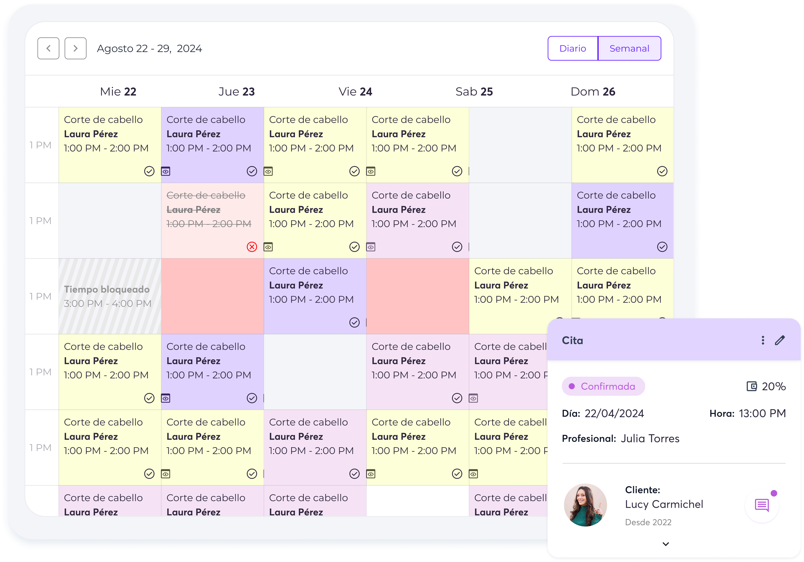
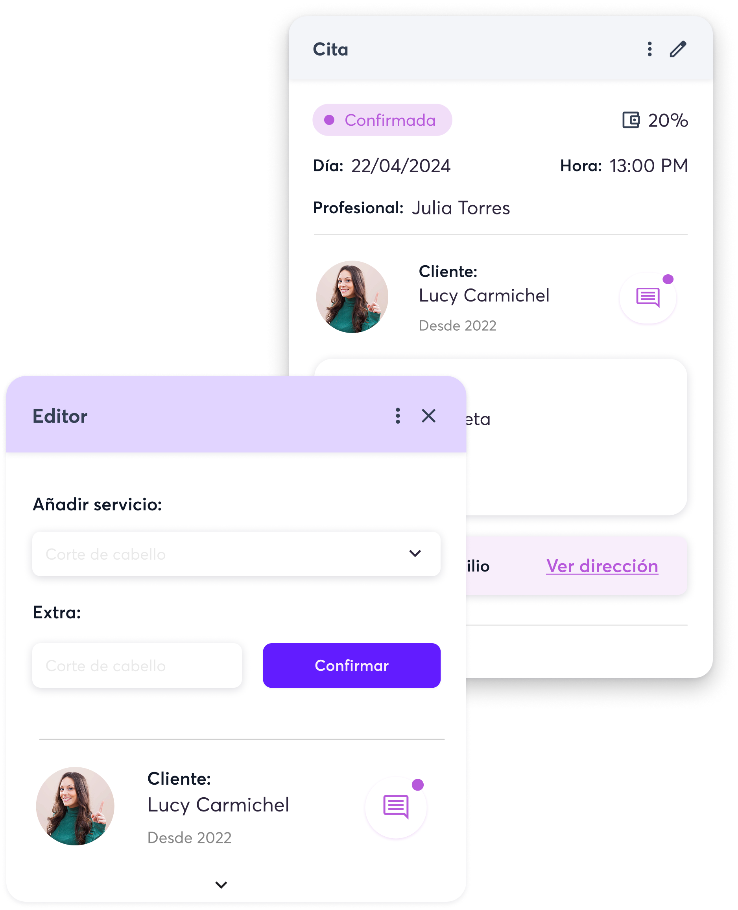
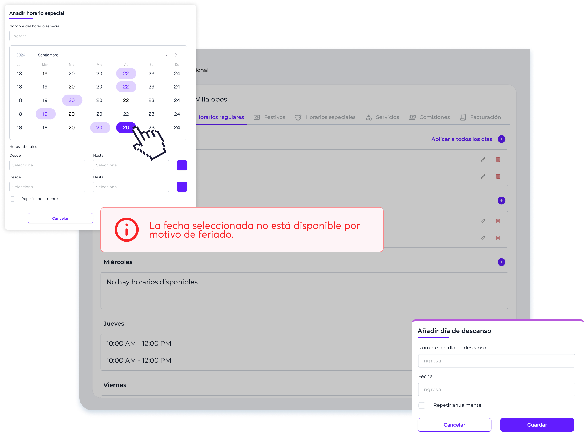
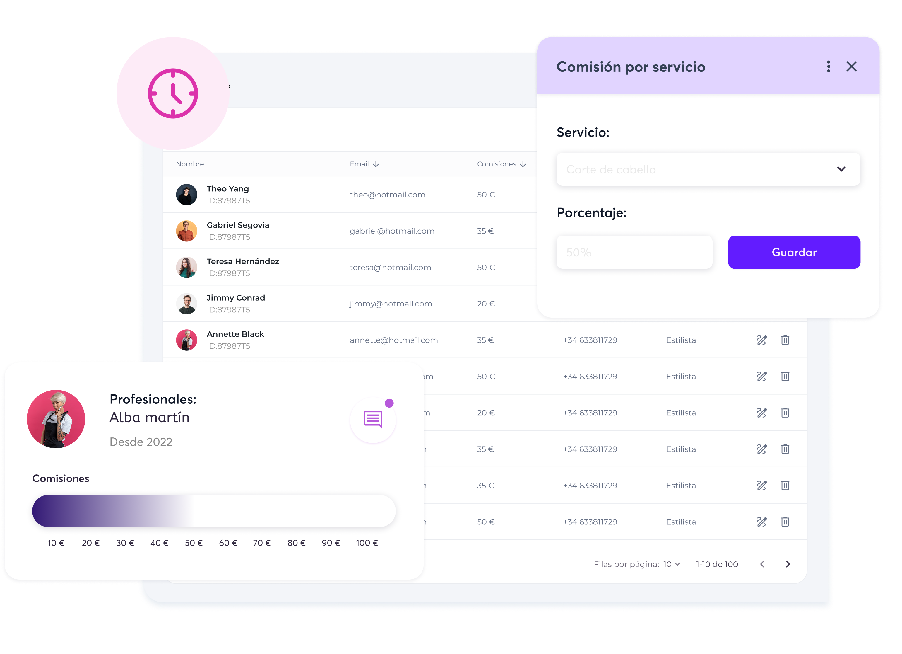
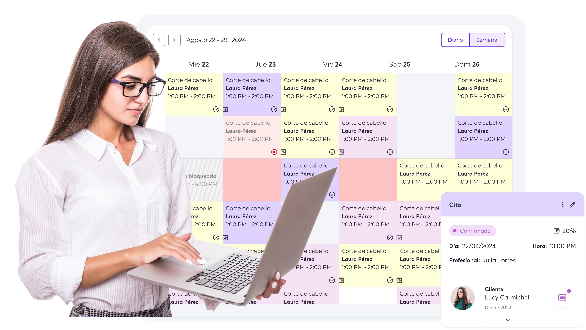
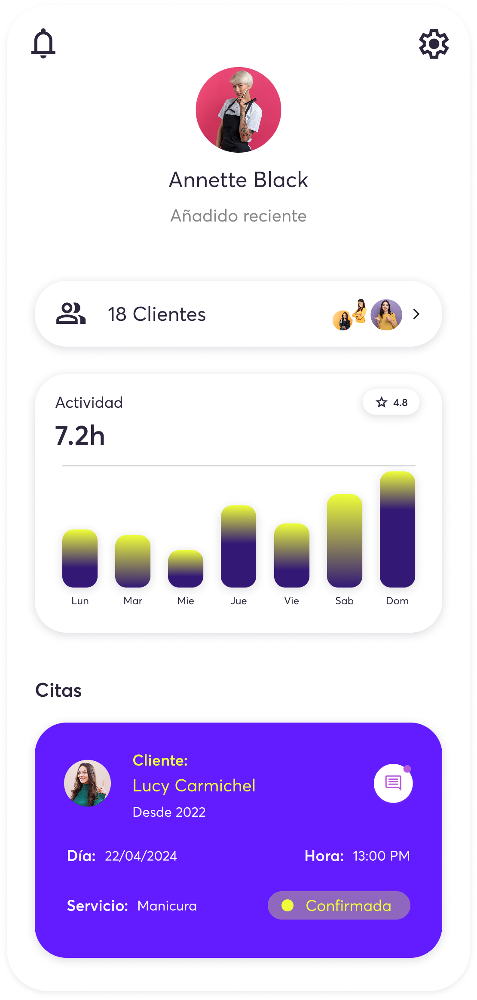

El equipo tiene autonomía para ver sus citas.
Tu equipo tiene el control total de su agenda, sin complicaciones. Cada profesional puede ver sus citas en tiempo real, conocer los servicios que tiene programados, contactar al cliente si es necesario y recibir notificaciones instantáneas sobre cambios o cancelaciones. Todo esto, desde la comodidad de una web o una app, para que siempre estén al tanto sin necesidad de intermediarios. Más autonomía, menos confusión y un servicio más eficiente para todos.

El equipo puede chatear con los clientes.
Tu equipo puede comunicarse directamente con los clientes a través de WhatsApp, resolviendo dudas, confirmando detalles de la cita o incluso recomendando productos y servicios. En el caso de los servicios a domicilio o de campo, el profesional puede informar al cliente de demoras, retrasos o cualquier otra incidencia.
El equipo puede editar las reservas según servicio realizado.
Tu equipo tiene la flexibilidad de ajustar las reservas en función del servicio realmente realizado. Si un cliente cambia de opinión y opta por un tratamiento diferente, el profesional puede modificar la cita en el momento. El sistema recalculará automáticamente la diferencia de precio y gestionará el cobro sin complicaciones.

Alta de empleados y colaboradores.
Agrega fácilmente a tu equipo, ya sean empleados fijos o colaboradores externos. Configura sus horarios, servicios que ofrecen y permisos de acceso en solo unos clics. Así, cada profesional tiene su espacio dentro del sistema, con su propia agenda y notificaciones personalizadas. Todo organizado, sin líos administrativos.

Gestiona comisiones visibles para los empleados.
Lleva el control de las comisiones de forma clara y transparente. Cada empleado o colaborador puede ver en tiempo real cuánto ha ganado por cada servicio o venta, sin necesidad de preguntar o hacer cálculos manuales. Configura diferentes porcentajes según el tipo de servicio o producto y deja que el sistema haga el resto. Más motivación para tu equipo, menos trabajo administrativo para ti.

Horarios habituales, especiales y festivos.
Gestiona los horarios de tu equipo de forma sencilla y flexible. Configura horarios habituales, establece turnos especiales para eventos o temporadas de alta demanda y define días festivos sin complicaciones. Todo sincronizado en la agenda digital para evitar confusiones y asegurarte de que siempre haya personal disponible cuando más lo necesitas.

Customiza precios y tiempos de realización por profesional.
A veces los profesionales necesitan tiempos de realización distintos e incluso, si son externos, pueden llegar a cobrar distinto por cada servicio. Ajusta precios y tiempos de realización según cada profesional. El sistema recalcula todo automáticamente, optimizando tanto la eficiencia como los ingresos.

Indica qué profesionales realizan servicios a domicilio.
Puedes configurar qué profesionales realizan servicios a domicilio, en qué horarios, a qué precio y en qué zona. Cada miembro del equipo que realice atención de campo tendrá su perfil actualizado con esta opción, facilitando la planificación y gestión de citas fuera del salón.
Empleados y freelance, en el mismo sistema
Godolphy distingue entre dos tipos de profesionales: empleados internos y colaboradores freelance. Cada uno con permisos y funcionamiento diferente.
Empleados tienen acceso a su agenda y sus clientes. No ven datos financieros ni la configuración global del negocio. No ven el email de los clientes.
Colaboradores freelance pueden aceptar o rechazar servicios según la política que tú definas. Ideal para centros que trabajan con profesionales externos o por proyectos.
En ambos casos, cada profesional solo ve lo que le corresponde. Tú, como administrador, tienes visión completa de todo el negocio.
Empieza gratis hoy mismo
Sin tarjeta de crédito. Sin permanencia. 30 días para probar todo el potencial de Godolphy.
30 días gratis · Sin tarjeta de crédito
Gestión de equipo para peluquerías y centros de estética — Control total
Coordinar los horarios de una peluquería o centro de estética con varios profesionales es uno de los mayores dolores de cabeza del sector. Godolphy lo resuelve con un panel de equipo donde configuras horarios, servicios y permisos de cada profesional en minutos.
Cada miembro del equipo tiene su propio acceso: ve su agenda del día, sus clientes asignados y sus servicios disponibles. Tú, como administrador, ves el conjunto y puedes modificar cualquier configuración sin necesidad de llamar ni mandar mensajes.
La gestión de horarios para centro de estética incluye excepciones, vacaciones y festivos por profesional. Si una estilista no trabaja los lunes o tiene dos semanas de vacaciones en agosto, el sistema bloquea esas fechas automáticamente y no permite reservas en esas horas.
También puedes configurar comisiones por servicio para cada profesional y ver el rendimiento individual en los reportes de facturación.
Tanto si tienes un equipo de dos personas como de veinte, Godolphy se adapta. Planes desde 33€/mes. Prueba gratis 30 días.
Preguntas frecuentes
Sí. Cada profesional tiene su perfil con sus servicios, horarios y nivel de permisos configurado por el administrador.
Sí. Desde el panel de equipo configuras horarios, excepciones, vacaciones y festivos para cada profesional.
Sí. En la página de reservas el cliente puede seleccionar el profesional de su preferencia si así lo configuras.
Gestiona tu equipo de profesionales desde un solo panel
Coordinar los turnos, los permisos y los servicios de cada profesional puede convertirse en un quebradero de cabeza cuando el equipo crece. Godolphy centraliza toda esa información en un único panel, para que puedas configurar los horarios de trabajo, asignar servicios a cada miembro y gestionar las ausencias sin salir de la plataforma. Todo queda sincronizado automáticamente con el calendario de citas, eliminando conflictos y dobles reservas.
Cada profesional accede con sus propias credenciales y ve únicamente la información que le corresponde según el rol que le hayas asignado. Puedes distinguir entre empleados fijos, autónomos que alquilan cabina o freelances externos, y configurar los permisos de cada uno de forma independiente. De esta manera, tu centro de estética o peluquería funciona con la máxima eficiencia operativa, sin renunciar a la privacidad de los datos de negocio.
La visión global del equipo también te ayuda a tomar mejores decisiones: detecta qué profesionales tienen mayor carga de trabajo, reorganiza turnos en épocas de mayor demanda y lleva un registro de horas trabajadas. Combinado con la gestión de clientes, puedes además asociar a cada cliente con su profesional de confianza y garantizar continuidad en el servicio, algo que marca la diferencia en la fidelización.